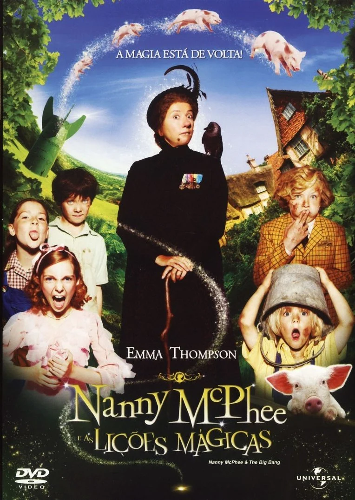
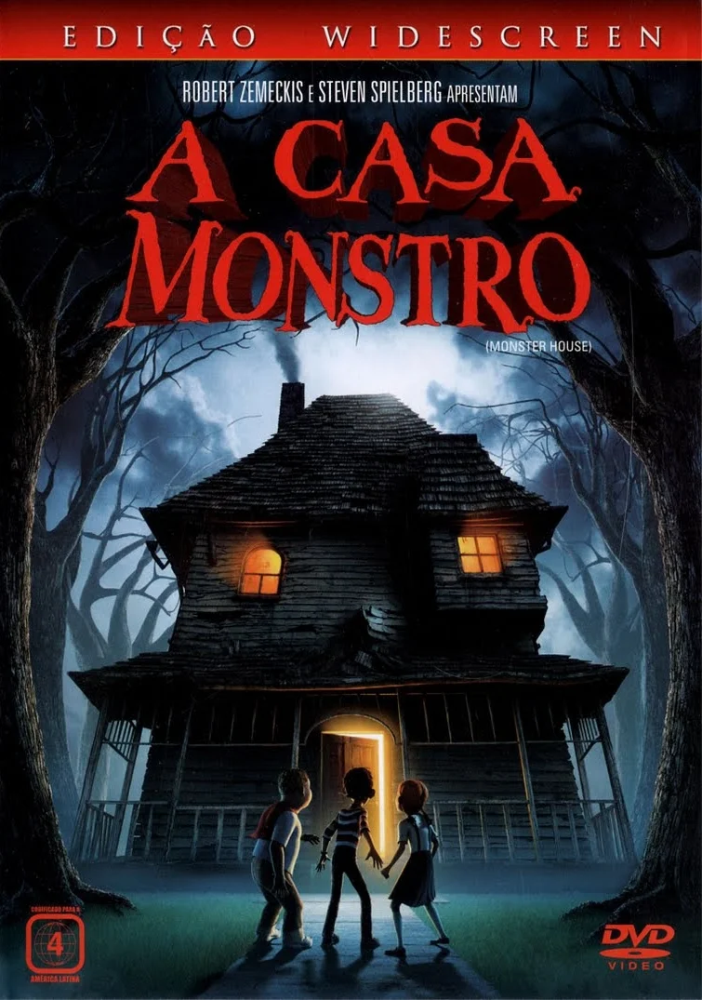

| Título do Filme |
Link |
Opinião |
Capa |
| Nanny McPhee e as Lições Mágicas |
Assistir |
A enigmática Nanny McPhee aparece na porta de uma mãe aflita, Isabel Green, que tenta criar os filhos e
cuidar da fazenda enquanto o marido está na guerra. Isabel está atarefada não apenas com seus três
filhos, mas também com os da irmã. Sem tempo a perder, Nanny usa mágica para ensinar cinco importantes
lições às crianças. |
 |
| A Noiva-Cadáver |
Assistir |
As famílias de Victor e Victoria estão arranjando seu casamento. Nervoso com a cerimônia, Victor vai
sozinho à floresta para ensaiar seus votos. No entanto, o que ele pensava ser um tronco de árvore na
verdade é o braço esquelético de Emily, uma noiva que foi assassinada depois de fugir com seu amor.
Convencida que Victor acabara de lhe pedir a mão em casamento, Emily o leva para o mundo dos mortos, mas
ele precisa retornar rapidamente antes que Victoria se case com o malvado Lorde Barkis. |
 |
| Moana 2 |
Assistir |
Moana viaja para os mares distantes depois de receber uma ligação inesperada de seus ancestrais. |
 |
| A Casa Monstro |
Assistir |
Nenhum adulto acredita quando três adolescentes falam que existe uma casa no bairro que é uma criatura
perigosa. Com o Dia das Bruxas se aproximando, eles têm que descobrir uma forma de destruir a casa antes
que ela faça mal a crianças inocentes. |
 |